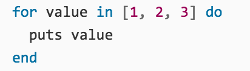
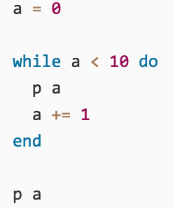
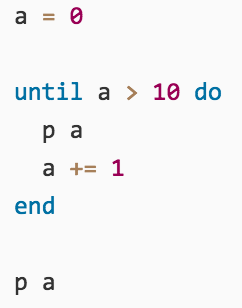
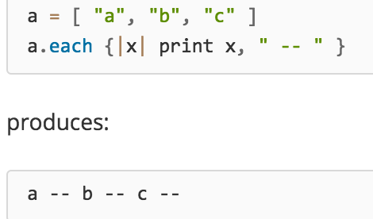
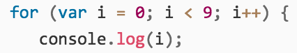
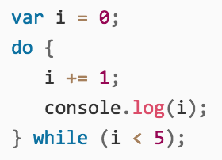
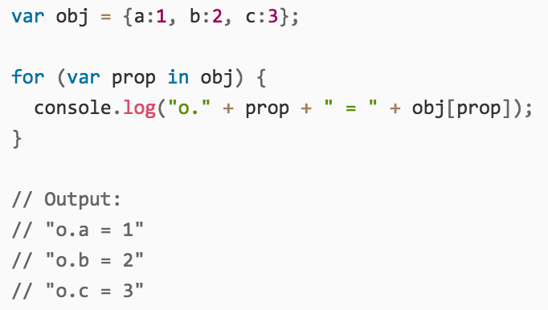

- The for loop consists of for followed by a variable to contain the iteration argument followed by in and the value to iterate over using each. The do is optional.

- The while loop executes while a condition is true.

- The until loop executes while a condition is false.

- Calls the given block once for each element in self, passing that element as a parameter.

- The for statement creates a loop that consists of three optional expressions, enclosed in parentheses and separated by semicolons, followed by a statement executed in the loop.

- The while statement creates a loop that executes a specified statement as long as the test condition evaluates to true. The condition is evaluated before executing the statement.

- The do...while statement creates a loop that executes a specified statement until the test condition evaluates to false. The condition is evaluated after executing the statement, resulting in the specified statement executing at least once.

- The for..in statement iterates over the enumerable properties of an object, in arbitrary order. For each distinct property, statements can be executed.
